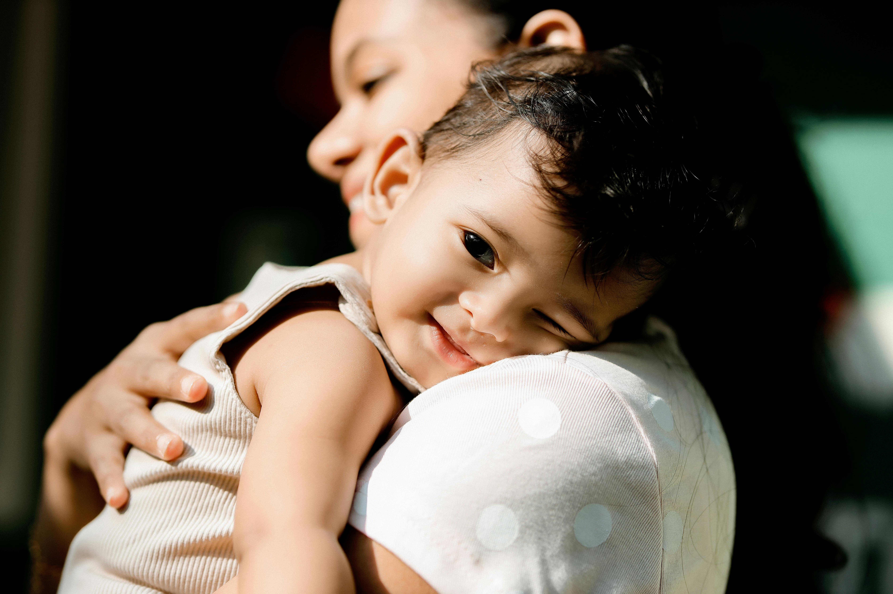
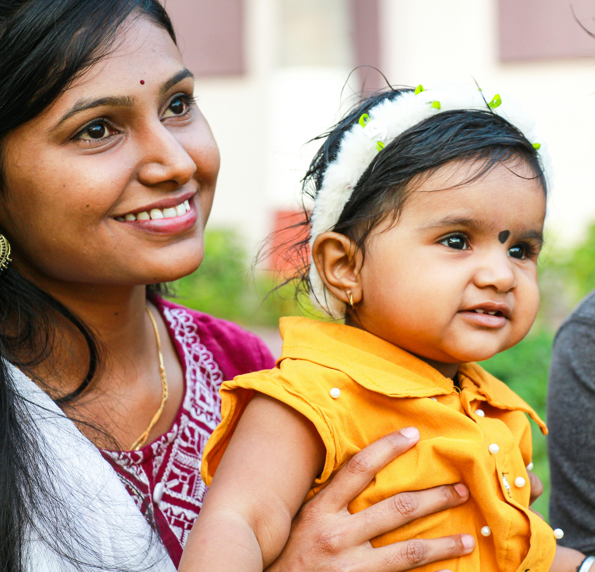

About TWCF
The Women and Children Foundation is a nonprofit organization focused on one thing: creating practical care kits for women, children, mothers, babies, and families facing hardship — at home in Michigan and around the world.



Care, packed with purpose.
We collect essential supplies, assemble thoughtfully designed care kits, and work with community organizations to place them into the hands of women and children who need them.
Our work is practical and specific. We don't make promises we can't keep. We build kits based on what recipients actually need — and we deliver them through organizations already doing trusted work in their communities.
TWCF works on two sides of the same mission: globally, in partnership with organizations like Carewin Africa; and close to home, where we're building a direct family assistance program for women, children, and families in Greater Lansing and surrounding communities.
Every kit is designed to support the dignity and comfort of the person receiving it — not just to check a box.
We ask recipient organizations what people actually need before we build a single kit. We don't assume.
We are a new organization. We say what we can do, not what sounds impressive. We report what actually happened.
We work through established, trusted organizations rather than trying to do everything ourselves. Partnership is the model.
What TWCF is — and what it isn't.
We are:
- ✓ A care kit assembly and distribution organization
- ✓ A partner to established shelters and service organizations
- ✓ Open to supporters worldwide
- ✓ Recognized by the IRS as a 501(c)(3) tax-exempt organization — EIN 42-2356765
- ✓ Registered with the State of Michigan to solicit charitable donations (Registration #71710)
- ✓ Able to offer tax-deductible donation receipts
We are not (yet):
- – A direct service provider (we don't work directly with individuals in crisis)
- – A source of legal, medical, or counseling advice
- – A scholarship, housing, or emergency aid program
Ready to get involved?
There are four ways to support TWCF — give supplies, build a kit, host a drive, or volunteer at an assembly event.